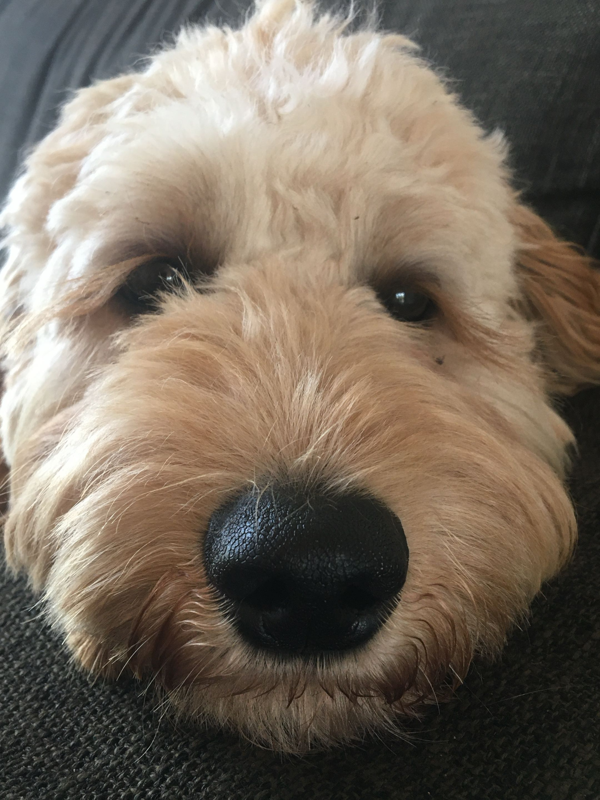

Wie ben ik?
Mijn naam is Seppe Filius en ik woon in Serooskerke. Ik ben in 2008 op 20 Augustus geboren. Ik kan zowel goed zelfstandig werken als samenwerken en ik kom ook vaak met ideeën. Mijn hobby's zijn gamen (zowel fysieke spellen als digitale), games ontwerpen en met vrienden praten. Een leuk feitje over mij is dat ik een VWO gymnasium diploma heb behaald.
Meer informatie
- Ik werk als vakkenvuller bij de plus in Vrouwenpolder. Daar werk ik op zaterdagen, behalve in de vakantie, dan werk ik ook op andere dagen.
- Ik werk graag samen met andere mensen, maar alleen werken vind ik ook fijn.
- Ik leer graag nieuwe dingen, vooral als het iets is dat mij nuttig lijkt of iets dat belangrijk om te weten is.
- Ik heb hond genaamd Ollie als huisdier, hij is een Australian doodle.

Socials
Github